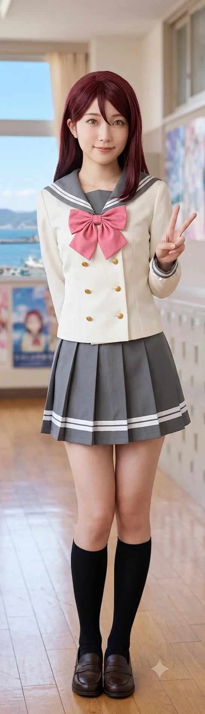

효빈광역시 안천구에 위치한 안천병원에서 현직 간호사로 맹활약 중인 직장인이자, 불의를 보면 참지 못하고 주먹부터 날아가는 이른바 'Aqours(아쿠아) 오시 어벤져스'의 핵심 전투원 멤버.
일본의 스쿨 아이돌 프로젝트 《러브 라이브! 선샤인!!》의 사쿠라우치 리코를 영혼까지 바쳐 모시는 진성 오시다. 빼어난 미모와 볼륨감 넘치는 몸매(B82-W57-H82) 덕분에 간호사 실습복과 현재의 근무 복장이 비현실적으로 잘 어울려 병원 내방객 및 남성들의 시선을 한 몸에 받으며 인기가 어마어마하다. 더욱이 평상시 목소리마저 사쿠라우치 리코처럼 차분하고 맑으며 우아한 알토~소프라노 톤을 지녔고, 피아노 연주와 더불어 노래 실력까지 매우 출중하여 가만히 서서 말하거나 노래할 때만 보면 영락없는 ‘도쿄 아키하바라 출신 부잣집 음대 아가씨’처럼 보인다.
하지만 새침하고 부유해 보이는 외모와는 달리, 실제로는 학창 시절 집안의 경제적 형편이 다소 빠듯하여 외곽 지역인 도변읍 앵내리로 이사를 가야 했던 서민 가정 출신이며, 실제 성격 또한 일명 '리언냐'로 불릴 만큼 털털하고 현실적이며 분노 게이지가 차오르면 주저 없이 적의 안면을 강타하는 '쾌감펀치기술(깡다구 펀치)'을 구사하는 반전 매력의 소유자다. 엽월대학교 간호학과 재학 시절 살인적인 학비와 실습비 부담을 효빈시의 블루 버드 멘토단 '대학생 멘토' 유급 활동(2023~2025)으로 이겨냈으며, 어엿한 현직 간호사가 된 후에는 후배들을 가르치는 '초빙 강사 겸 직업멘토'로 금의환향한 입지전적인 선배다.
태어난 곳이 효빈광역시 안천구 이자동(梨子洞)이다. '이자(梨子)'라는 지명은 사쿠라우치 리코(桜内 梨子)의 이름 한자와 100% 완벽히 일치한다. 심지어 생일마저 2003년 9월 19일로 리코의 생일과 토씨 하나 틀리지 않고 똑같은, 그야말로 우주가 점지해 준 기적의 도플갱어다.
원작의 리코가 Aqours 내에서 그나마 상식인(츳코미) 포지션을 맡으려 애쓰지만 정작 본인도 만만치 않은 기행을 벌이는 것처럼, 이리자 역시 겉으로는 단정하고 지적인 간호사 코스프레를 완벽하게 유지한다. 하지만 예상치 못한 돌발 상황이나 특히 자신의 은밀한 취미(동인지)가 발각될 위기에 처하면 얼굴이 토마토처럼 새빨개지며 "아니아니아니! 그건 오해야!!"라며 양팔을 휘저으며 허둥지둥 대는 등, 리코 특유의 '당황 기믹'을 현실에서 200% 구현해 낸다.
이리자가 안천병원 환자들과 블루 버드 멘토단 후배들에게 ‘백의의 천사’로 추앙받는 가장 큰 무기 중 하나는 바로 그녀의 목소리와 노래 실력이다. 남동생을 패거나 진상을 참교육할 때를 제외한 평상시에는, 원작의 사쿠라우치 리코(CV. 아이다 리카코)와 소름 끼칠 정도로 똑같은 차분하고 지적이면서도 끝음이 맑게 울리는 청아한 목소리를 지니고 있다.
응급실이나 병동에서 불안해하는 소아 환자나 노인 환자들에게 이 차분하고 따뜻한 리코 보이스로 "괜찮으세요, 환자분. 제가 아프지 않게 천천히 주사 놓아드릴게요"라고 속삭이면, 난동을 부리던 환자조차 맥박이 안정되는 기적이 일어난다. 또한 피아노 연주뿐만 아니라 가창력 역시 성악·실용음악 전공자 뺨칠 정도로 매우 뛰어나서, 병원 연말 자선 음악회나 멘토단 회식 자리에서 피아노를 직접 치며 리코의 솔로곡(《Pianoforte Monologue》)이나 발라드를 부르면 맑고 단단한 고음과 깊은 호소력에 청중 전원이 넋을 잃고 기립 박수를 친다.
어릴 적 효빈시 안천구 도심인 이자동(梨子洞)에서 태어나 이자초등학교에 입학했으나, 초등학교 저학년 무렵 아버지의 소규모 사업 부진과 치솟는 도심 전셋값 문제로 집안의 경제적 사정이 급격히 빠듯해졌다. 결국 이리자네 가족은 집값이 훨씬 저렴한 도농복합 외곽 지역인 탄성군 도변읍 앵내리(櫻内里)로 이사를 가야 했고, 이리자는 앵내초등학교로 전학을 가게 되었다. (역설적이게도 이 빠듯한 가정형편 때문에 이사한 동네 이름이 하필 사쿠라우치 리코의 성씨 한자와 100% 똑같은 ‘앵내리’여서, ‘이자동(梨子)에서 태어나 앵내리(櫻内)에서 자란 완벽한 성골 리코’라는 기적의 서사가 완성되었다.)
원작 애니메이션의 사쿠라우치 리코가 도쿄 아키하바라 출신의 유복한 중산층 외동딸이고, 이리자 본인도 와인빛 생머리에 피아노를 잘 치는 고상한 외모를 지닌 탓에 주변에서는 그녀를 ‘부잣집 아가씨’로 오해하곤 했다. 하지만 실제 학창 시절의 이리자는 사고뭉치 남동생까지 딸린 빠듯한 서민 가정의 K-장녀였다. 비싼 피아노 개인 레슨을 받을 돈이 없어 동네 교회와 앵내중학교 음악실의 낡은 업라이트 피아노를 방과 후마다 독학으로 치며 실력을 길렀고, 효빈종합고등학교 시절에도 학원 한 번 다니지 않고 시립도서관에서 문제집을 빌려 독학으로 성적을 끌어올렸다. 수의대 진학에는 아쉽게 실패했지만, 부모님께 취업 걱정과 노후 부담을 덜어드려야 한다는 현실적인 책임감으로 지역 명문인 엽월대학교 간호학과에 장학생으로 입학했다. 이처럼 학창 시절 겪었던 경제적 결핍은 훗날 그녀가 낭만보다 ‘월급 40만 원 더 주는 안천병원’을 칼같이 선택하게 만든 가장 현실적인 원동력이 되었다.
엽월대 간호학과 재학 시절, 이리자는 학업과 덕질, 그리고 생활비 마련을 병행하기 위해 상상을 초월하는 은폐술과 체력을 발휘했다.
2023년 초, 당시 엽월대학교 간호학과에 재학 중이던(성인) 이리자는 당가동 서브컬처 파티 역사에 남을 전설적인 무용담을 쓰게 된다.
혐덕의 굴레에서 벗어나 진리를 깨달은 임은혜가 악질 일진 무리와 손절을 치려 하자, 앙심을 품은 일진들이 은혜에 대한 음흉한 헛소문을 퍼뜨리며 으슥한 골목으로 그녀를 몰아세웠다. 급기야 이성을 잃은 한 남학생이 "야, 니 몸도 좋던데, 그렇게 가고 싶으면 나랑 한번 하고 가 씨발련아."라며 선을 넘는 성폭력을 시도했다.
비명을 지르는 은혜를 조금 떨어진 곳에서 목격한 안공주, 유리내, 백모모가 분노했지만 여고생 셋의 힘으로는 제압이 불가능해 절망하던 찰나였다. 마침 근처를 지나가던 압도적 피지컬의 'Aqours 오시 어벤져스 5인방'이 안공주의 호출 핑을 받고 구세주처럼 등판했다. 라인업은 수영 베테랑 도선요(요우 오시), 폐활량과 근력의 고트 송과영(카난 오시 다이버), 그리고 이리자(리코 오시)와 그녀들의 요우 오시 남친, 카난 오시 남동생까지 총 5명의 인간 흉기들이었다.
불의를 못 참는 효빈시의 깡다구답게 어벤져스는 망설임 없이 일진 무리에게 돌진했다. 선봉에 선 이리자는 특유의 '쾌감펀치기술'을 쓰레기 일진의 안면에 정확히 작렬시키며 안면 함몰 수준의 물리적 타격을 입혔고, 상황을 완벽하게 제압해 버렸다. 바닥에 처박힌 일진이 정신을 못 차리고 발악하자, 백모모가 다가가 역사상 유례없는 팩폭 사자후를 갈기며 쐐기를 박았다. 이 극적인 구출 작전은 임은혜가 혐덕 무리와 완벽하게 연을 끊고 친구들에게 영혼의 도게자를 박게 만든 결정적 계기가 되었다.
이 끔찍한 사건을 전해 들은 리에라몰 점장 임세혁과 아내 연월엽은 그야말로 극대노(極大怒)했다. 특히 과거 스토커 트라우마가 있던 연월엽은 피눈물을 흘리며 분노했고, 임세혁은 효빈시 최고의 대형 로펌을 선임해 일진 무리에게 형사 고소와 천문학적 민사 소송을 무자비하게 걸어 집안을 완전히 박살 내는 '피의 숙청(금융 참교육)'을 시전했다.
반면, 절체절명의 위기에서 은혜를 구해준 'Aqours 어벤져스 5인방'에게는 입이 떡 벌어지는 자본주의의 축복이 내려졌다. 임세혁 부부는 이리자를 포함한 5인방을 리에라몰 VIP실로 정중히 초대해 눈물로 감사 인사를 전하며, 리에라몰 100만 원 상품권, 평생 전 매장 VIP 30% 할인권, 초호화 Aqours 한정판 굿즈 선물 세트를 안겨주었다.
이 압도적인 혜택을 품에 안은 이리자는 간호학과 실습의 피로가 싹 날아가는 극한의 행복감에 젖어 "이래서 갓물주 점장님 하시는구나! 평생 리에라몰에 뼈를 묻고 충성하겠습니다!"라며 격하게 환호했다.
사건 이후, 이리자의 직장(안천병원)이나 본가(이자동·앵내리)를 오가는 길목에 리에라몰이 위치한 덕에 그녀는 퇴근길 방앗간처럼 이곳을 들른다. 자신을 구해준 이리자를 거의 구세주이자 친언니 이상으로 떠받드는 임은혜는 리에라몰에서 이리자를 발견할 때마다 "리언냐아아!!"라며 달려가 와락 안긴다. 심지어 은혜는 이리자의 '은밀한 취미'를 눈치채고는, 점장 딸의 권력을 남용해 서브컬처 코너에서 갓 들어온 고수위 신작 얇은 책을 은밀하게 빼돌려 뇌물로 바치며 충성을 맹세하고 있다.
애니메이션 속 사쿠라우치 리코의 유복한 아가씨 이미지와 달리, 현실의 이리자는 앞서 서술했듯 집안 형편이 넉넉하지 못해 대학 입학 직후부터 살인적인 간호학과 등록금과 고가의 원서 교재비, 병원 임상 실습복·간호화 구입비, 그리고 은밀한 취미(동인지 구매) 자금을 스스로 벌어야 하는 처지였다. 특히 간호학과 특성상 학기 중 1,000시간에 육박하는 병원 임상 실습 때문에 일반 카페나 편의점 고정 알바를 뛰기조차 불가능해 깊은 시름에 빠져 있었다.
이때 이리자의 숨통을 틔워준 구원의 동아줄이 바로 박효빈 시장이 창설한 블루 버드 멘토단의 ‘대학생 멘토(실무 및 교육지원 트랙)’ 제도였다! 2023년부터 2025년 졸업 때까지 대학생 멘토로 선발된 이리자는, 자신의 간호학과 실습 스케줄에 맞춰 유연하게 근무 시간을 조정받으며 안천구 보건소 감염병 예방·방역 행정 실무 보조와 관내 지역아동센터 초·중·고 멘티 대상 기초 보건·성교육 및 응급처치 멘토링을 수행했다. 효빈시 생활임금의 1.2배에 달하는 두둑한 급여 덕분에 이리자는 학자금 대출 한 푼 받지 않고 무사히 엽월대 간호학과 학사 학위와 간호사 국가고시 합격을 거머쥘 수 있었다.
졸업 후 안천병원의 어엿한 정식 간호사로 취업해 경제적 자립을 이룬 이리자는, 자신이 대학생 멘토 시절 받았던 은혜를 후배들에게 돌려주기 위해 2026년 가을 블루 버드 멘토단의 ‘현장 실무 초빙 강사 겸 직업멘토(간호·보건 의료 분야)’로 위촉(2027년 정식 커리큘럼 전환)되며 금의환향했다!
이로써 이리자는 ‘블루 버드 멘토단의 장학 급여를 받던 대학생 멘토(수혜자)가 현업 전문직으로 성공하여, 이제는 후배 대학생 멘토들과 보건계열 진로 희망 초·중·고 멘티들을 가르치는 강사멘토로 돌아온 최초의 롤모델 사례’로 효빈시청 백서에 당당히 이름을 올렸다. 그녀의 특강은 특유의 차분하고 맑은 리코 보이스로 진행되는 ‘실전 심폐소생술(CPR) 및 나이트 교대 근무 멘탈 관리법’과, 매운맛 ‘응급실 진상 주취자 쾌감펀치 제압학(?)’이 결합되어 멘토단 내 최고 인기 강의로 꼽힌다.
2026년 가을, 블루 버드 멘토단 초빙 강사 및 직업멘토 위촉식에서 일어난 전대미문의 난동 사건. 국민의힘 재진숙 당협위원장이 행사에 쳐들어와 03년생 동갑내기 강사들(최후영, 오동령 등)에게 "딴따라 애새끼" 운운하며 깽판을 쳤다.
재진숙은 대학생 멘토 출신으로 자랑스럽게 강사멘토 위촉장을 받으러 참석해 있던 이리자의 '안천병원 간호사' 명찰을 보고는, 시대착오적인 꼰대력을 발휘하며 삿대질을 했다.
이 구시대적인 '간호원' 비하 발언과 직업 혐오 발언에 행사장 전체가 경악으로 얼어붙었다. 분노 게이지가 한계치를 뚫어버린 이리자는, 특유의 차분하고 청아한 리코 보이스를 한 옥타브 낮추어 얼음장처럼 차갑게 가다듬고는 재진숙의 면전에 대고 쏘아붙였다.
이 자비 없는 의료인 팩트 폭격과 안공주의 데이터 팩폭, 뒤이은 오동령의 물리적 팩폭(스쿼트 발언)이 결합되자, 재진숙은 얼굴이 시뻘개져 단 한마디도 반박하지 못하고 빤스런을 치게 되었다. 이리자의 이 통쾌한 사이다 발언은 대한간호협회 및 간호계 커뮤니티는 물론 효빈시민들에게 열광적인 호응을 얻으며 재진숙을 사회적으로 완벽하게 매장시켰다.
2023~2025년 대학생 멘토를 거쳐 2026~2027년 초빙 강사 겸 직업멘토로 승격되면서, 이리자는 블루 버드 멘토단 내부의 핵심 의료·무력 허브 역할을 담당하고 있다.
엽월대 간호학과를 우수한 성적으로 졸업한 이리자(사쿠라우치 리코의 완벽한 실사판 도플갱어)가 간호사 취업 시장에 나왔을 때, 효빈시 서브컬처 판은 그야말로 대통합의 축제 분위기였다. 그녀의 이름(이리자)과 생일(9월 19일), 심지어 출생지까지 완벽하게 리코와 일치했기에, 동네 덕후 친구들과 'Aqours 오시 어벤져스' 멤버들은 "리언냐, 너 무조건 성지인 이자병원 가서 덕업일치 할 거지? 우리가 매주 성지순례 갈게!"라며 호들갑을 떨었다. 실제로 이리자는 안천동의 터줏대감인 라이벌 안천병원과 자신의 운명적 성지인 이자병원 두 곳 모두에 서류 프리패스로 동시 합격했다.
하지만 면접장에서 벌어진 '수당 협상 결렬 사태'가 모든 역사를 뒤바꾸었다. 이자병원 최종 면접 당시, 학창 시절 빠듯한 가정형편을 겪으며 자수성가해야 했던 이리자는 면접관들에게 자신의 압도적인 상징성(이름, 생일, 외모의 100% 싱크로율)을 은근슬쩍 어필했다. "제가 입사하면 전국의 럽라이버들이 성지순례를 올 텐데, 병원 홍보에 막대한 시너지가 날 것입니다. 혹시 신입 수당 체계나 야간(나이트) 수당에 약간의 유연성(협상)을 발휘해 주실 수 있을까요?"라며 고도의 자본주의적 딜을 시도했다.
그러나 당시 이자병원의 꽉 막힌 꼰대 수간호사와 융통성 제로의 병원장은 콧방귀를 뀌며 그녀를 비웃었다. "요즘 젊은것들은 낭만이 없어. 간호사 신입 나부랭이가 어딜 감히 특혜를 요구해? 우리 이자병원의 거대한 이름값과 전통이 있는데 굳이 일개 신입한테 돈을 더 쥐여주며 홍보할 필요 없다. 여기 말고도 일할 사람 널렸으니 꼬우면 딴 데 가든가."라며 단칼에 거절하는 최악의 오판을 저질렀다.
면접장을 나온 이리자의 손에 쥐어진 것은 안천병원의 최종 합격 통지서와 연봉 테이블이었다. 안천병원은 빡센 응급실과 중증외상센터를 굴리는 대가로, 기본급 및 야간 수당 체계가 이자병원보다 무려 월 40만 원이나 더 높았다. (현재는 두 병원 간의 눈치싸움으로 약 20만 원 차이로 좁혀지긴 했다.) 이리자는 단 1초의 망설임도 없이 안천병원 채용 계약서에 도장을 찍어버렸다.
이 소식을 듣고 경악한 덕후 친구들이 "미쳤어?! 네 영혼의 고향을 버리고 라이벌 병원으로 간다고?!"라며 경악하자, 이리자는 피도 눈물도 없는 자본주의적 팩폭으로 친구들의 입을 다물게 했다. "솔직히 30만 원만 더 맞춰줬어도 이자병원 가서 낭만 챙기고 덕업일치 했지! 근데 우리 집 형편에 한 달 40만 원 차이는 선 세게 넘었지! 부모님 용돈도 드려야 하고, 내 최애 알터 피규어가 몇 개고, 리에라몰에서 얇은 책을 박스 떼기로 쓸어 담을 수 있는 돈인데, 미쳤다고 낭만만 좇아서 푼돈을 받아?! 오시에 대한 사랑도 자본주의 앞에서는 한 수 접는 게 어른의 세계야!"
한편, 리코의 완벽한 인간 도플갱어가 '고작 월 40만 원 차이'로 가장 껄끄러운 경쟁사인 안천병원으로 런해버렸다는 충격적인 소식이 효빈시 의료계와 서브컬처 커뮤니티에 파다하게 퍼졌다. 이를 뒤늦게 보고받은 이자병원 재단 이사회는 그야말로 길길이 날뛰며 극대노했다. 이사회 의장은 면접을 진행했던 병원장과 수간호사를 이사회실로 소환해 서류철을 집어 던지며 맹비난을 퍼부었다. "야 이 멍청한 놈들아! 가만히 놔둬도 전국구 뉴스에 탈 엄청난 인간 마스코트이자 수십억 원어치의 마케팅 가치를 가진 인재를, 고작 한 달에 40만 원 푼돈 아끼려다 제일 짜증 나는 라이벌 안천병원한테 갖다 바쳤어?! 당장 책임지고 사퇴해!!"
이 엄청난 문책과 압박 속에서 해당 꼰대 병원장은 어떻게든 자리를 보전하려 발악했으나, 민심을 잃고 탈탈 털리던 와중에 훗날 제약회사 의약품 리베이트 등 다른 추악한 비리까지 줄줄이 찔리면서 결국 경찰 조사를 받고 아주 비참하고 불명예스럽게 퇴진당하고 말았다. 반면 이리자는 안천병원 응급실에서 특유의 '쾌감펀치'로 진상들을 뚜드려 패며 맹활약 중이고, 매달 두둑하게 꽂히는 금융 치료(월급)를 바탕으로 풍족한 덕질 라이프를 영위하고 있으니, 안천병원 입장에서는 최고의 인재 영입이자 자본주의가 낳은 완벽한 해피엔딩이라 할 수 있다.
원작의 리코처럼, 이리자 역시 어릴 적엔 덩치 큰 개를 극도로 무서워했다. 그러나 고등학교 시절, 어머니의 지인이 피치 못할 사정으로 잠시 맡겨둔 대형견과 며칠을 함께 지내다가 영혼을 완전히 빼앗겨버리는 대각성을 겪었다. 개에게 미쳐버린 그녀는 어머니에게 "우리 집에서 키우면 안 돼?!"라며 식음 전폐하고 거실에 드러누웠다가 등짝 스매싱을 맞고 호되게 혼났다.
강아지 사랑에 눈이 먼 이리자는 아예 수의대를 지망하고 미친 듯이 공부했다. 그러나 사교육 없이 독학으로만 준비하다 보니 아쉽게도 내신이 살짝 모자라 수의대 진학에는 실패했다. 하지만 그때 뼈를 깎으며 빡공한 덕분에 지역 명문인 엽월대학교 간호학과에 당당히 합격하는 기염을 토했다. 현재는 자취를 하면서 소원대로 강아지 한 마리를 입양해 키우고 있으며, 이름은 리코의 솔로곡에서 따온 '프렐류드(Prelude)'다. 고된 3교대 나이트(야간) 근무를 뛸 때마다 스테이션 구석에서 휴대폰 배경화면의 프렐류드 사진을 보며 "우리 프렐류드 보고 싶어... 흑흑..."이라며 폭풍 오열(상사병)을 하는 것이 안천병원의 짠한 일상이다.
대학생 멘토 시절부터 현재의 초빙 강사(직업멘토)에 이르기까지, 이리자는 그저 따뜻한 조언만 해주는 천사 멘토가 아니었다. 평소에 말할 때는 사쿠라우치 리코처럼 한없이 차분하고 나긋나긋한 목소리로 설명하지만, 엇나가고 비뚤어지는 불량 멘티 청소년들이나 예의 없는 진상들에게는 특유의 '깡다구 펀치'의 물리적 시범(?)과 함께 시원한 팩트 폭격을 날려 정신을 개조시키는 스파르타식 멘토링으로 명성이 자자했다. 이 스파르타 멘토링의 내공은 2026년 가을, 멘토단 위촉식 행사에 난입하여 "간호원이 무슨 강사냐"며 망언을 쏟아낸 재진숙 위원장에게 "어르신 혈관엔 주사 안 놔드릴 겁니다. 뇌 MRI나 찍어보세요"라는 완벽한 사이다 팩폭으로 돌아가, 재진숙을 사회적으로 매장시키는 통쾌한 결과를 낳았다.
리에라몰 대형 서점 서브컬처 코너에서 코믹월드 직후 여성향 및 백합 고수위 동인지들이 게 눈 감추듯 싹쓸이 품절되는 현상의 주범은, VIP 30% 평생 할인권의 축복을 받은 이리자였다. 한 번은 리에라몰에서 동인지를 한가득 품에 안고 몰래 빠져나가려다가, 우연히 데이트 중이던 안천병원 동료 간호사들과 딱 마주치자 반사적으로 곁에 있던 은혜의 등 뒤로 숨으며 "은혜야! 이거 네가 산 거라고 해 제발!!"이라며 갓물주 딸을 인간 방패로 썼던 대환장 흑역사가 있다.
엽월대 간호학과 재학 시절, 이리자는 두꺼운 전공 서적인 '그레이 해부학' 책 껍데기 사이에 고수위 동인지를 교묘하게 끼워 넣고 도서관에서 몰래 감상하던 전적이 있다. 뒤에서 교수님이 다가오는 것도 모르고 미소를 짓고 있다가, 교수님이 "이 학생, 해부학의 근육 묘사에 아주 푹 빠져 있구먼"이라며 어깨를 두드리자, 그 자리에서 비명을 지르며 팝팝 튀어 오르듯 기절할 뻔한 전설적인 아웃팅 위기 사건이다.
안천병원 내 건강 증진 포스터 공모전이 열렸을 때, 이리자가 '바이러스'를 주제로 그림을 출품했다. 하지만 특유의 기괴한 화백 속성 탓에 완성된 그림은 마치 지옥에서 기어 올라온 크툴루 괴물 같았고, 안천병원장이 이를 보고 "이선생... 교대 근무 스트레스가 이렇게 심한 줄 몰랐네... 특별 휴가 3일 다녀와."라며 심리 치료 대상으로 오해받아 얼떨결에 포상 휴가를 다녀왔다.
자신을 구해준 이리자를 친언니 이상으로 떠받드는 임은혜는, 점장 딸의 권력을 남용해 서브컬처 코너에서 갓 들어온 고수위 신작 얇은 책을 은밀하게 빼돌려 뇌물로 바치며 충성을 맹세하고 있다. 어느 날, 은혜에게 두둑하게 조공을 받고 안천병원 야간 근무 출근길에 창선역 환승 통로에서 뛰어오다 에코백이 열려 안에 있던 수위 높은 동인지가 바닥에 흩뿌려지는 대참사가 발생했다. 지나가던 사람들이 주워주려 하자 이리자는 빛의 속도로 슬라이딩을 하며 "안 돼!!! 내 영혼의 양식!!"을 외쳐 역 구내를 충격에 빠트렸다.
효빈시 흑마법계의 거두 진선자가 무리한 타천(공원 벤치 다이빙)을 시도하다 다쳐서 안천병원 응급실에 실려 온 적이 있다. 마침 야간 당직 중이던 이리자는 한숨을 쉬며 차분한 리코 목소리로 "아휴, 이 타천사 녀석아... 소독약 들어간다. 지옥의 불꽃을 느껴봐라."라며 자비 없이 가장 굵은 18게이지 수액 바늘을 꽂아버려 선자를 비명 지르게 만들었다. 선자는 눈물을 쏙 빼면서도 이리자를 '백의의 쾌감 타천사'라며 칭송(?)했다. 이리자는 이때 진선자가 내뱉은 찰진 중2병 대사들을 빼곡하게 메모해 두었다가 자신의 동인지 신작 대사 소재로 쏠쏠하게 써먹었다.
이리자 인생의 유일한 오점이자 인내심 테스트기인 남동생과의 일상적인 육탄전은 거의 UFC 타이틀 방어전을 방불케 한다. 특히 남동생이 누나 방에 몰래 들어가 '침대 밑에 숨겨둔 고수위 얇은 책(R-18 동인지)'을 찾아내어 "어머니!! 누나가 이상한 책 봅니ㄷ... 컥!!"이라며 고자질하려던 순간, 이리자는 침대에서 스프링처럼 튀어 올라 완벽한 폼의 '플라잉 니킥'과 명치를 강타하는 '쾌감펀치' 콤보를 먹여 동생의 입을 완벽하게 틀어막았다.
2026년 4월 25일은 이리자의 영원한 오시이자 덕질 인생의 북극성인 아이다 리카코(리캬코)의 서울 팬미팅이 열린 날이었다. 이날 이리자는 병원 나이트 근무를 마치고 부랴부랴 준비하느라 기차 예매 타이밍을 처참하게 놓쳐버렸고, 결국 효빈에서 고속터미널까지 비좁은 시외버스를 타고 올라와야만 했다. 설상가상으로 터미널에서 상암동 행사장까지 주말의 지옥 같은 교통체증을 뚫고 광역버스로 이동하는 극악의 난이도를 자랑하는 행군을 겪어야 했다. 버스 안에서 멀미와 초조함에 피가 마르는 듯했으나, 이리자는 "내가 안천병원 응급실에서 피를 토하며 나이트 근무를 뛰어 번 보너스 수당을 아낌없이 털어 넣었는데, 절대 늦을 수 없다!"며 불굴의 의지로 멘탈을 다잡았다. 결국 땀을 뻘뻘 흘리며 입장 마감 직전에 아슬아슬하게 세이프한 그녀는, 자본주의의 힘으로 쟁취해 낸 '최전열 우측'이라는 압도적인 꿀자리에 털썩 주저앉아 감격의 눈물을 훔쳤다. 옆자리에는 든든한 영혼의 단짝 고해영이 동행하여 끊임없이 텐션을 끌어올려 주며 분위기를 완벽하게 예열해 주었다.
본격적인 행사가 시작되고, 이리자의 영원한 최애인 '리언냐(아이다 리카코)'가 무려 선녀같이 아름다운 분홍색 한복을 입고 무대에 등장하자 장내는 그야말로 발칵 뒤집어졌다. 리캬코 본인도 팬들이 자신을 '오네짱(언니)'이라는 친근한 의미로 부른다는 것을 전해 듣고는 입꼬리가 귀에 걸릴 듯 엄청나게 좋아했다고 한다. 이에 질세라 이리자는 미리 밤을 새워가며 정성스럽게 똑같이 핑크색 한복풍 옷을 입힌 '사쿠라우치 리코 네소베리'를 코앞에서 당당하게 들이밀었다. 무대 위에서 이를 정확히 발견한 리캬코는 눈을 동그랗게 뜨며 마이크에 대고 "카와이! 예쁘다!"라는 찐 감탄을 육성으로 내뱉어 주었다. 그뿐만이 아니라, 감동받은 표정의 이리자와 완벽하게 눈을 맞추며 양손을 모아 전설의 "리코쨩 빔~!"을 직접 쏘는 만행(?)을 저질렀다. 리코쨩 빔을 정통으로 맞은 이리자는 그 자리에서 다리에 힘이 풀려 주저앉을 뻔하며 그야말로 이승의 모든 미련을 훌훌 털어버리고 완벽하게 성불하는 기적을 체험했다.
영접의 진정한 하이라이트는 행사 후반부에 진행된 친필 사인 포스터 증정 및 당첨 시간이었다. 이리자는 평소 쓸 때마다 손목이 아파 원망스러웠던 획수도 오지게 많고 복잡한 본인의 한자 본명 '이리자(李梨子)'를 당당히 적어 냈다. 포스트잇을 확인한 리캬코는 이 기적 같은 한자 이름, 즉 자신이 연기하는 배역인 사쿠라우치 리코의 이름인 '리코(梨子)'와 100% 완벽하게 동일한 한자라는 사실을 깨닫고는 입을 다물지 못하며 감탄을 금치 못했다. 리캬코는 신기함과 고마움이 교차하는 표정으로 그 복잡한 한자를 한 획 한 획 정성스럽게 꾹꾹 눌러 적어주었고, 이름 옆에 앙증맞은 하트(♡)까지 꽉 채워 그려 넣은 세상에 단 하나뿐인 친필 사인 포스터를 완성해 주었다. 이 영광스러운 전리품을 두 손에 받아 든 이리자는 세상을 다 가진 듯한 미친 승리감에 도취되었고, 옆에 있던 고해영에게 포스터를 자랑하며 "이건 이제 우리 집안의 가보이자 내 관짝에 같이 넣을 부장품 1호다!"라며 오열했다.
이날 팬미팅이 유독 대환장 파티가 될 수밖에 없었던 또 다른 이유는 바로 MC의 존재였다. 아이다 리카코의 팬미팅 바로 다음 날, 동일한 장소에서 텐션 높기로 소문난 성우 남도형의 팬미팅이 예정되어 있었기에 이날 행사의 진행 역시 박시윤 MC가 담당하게 되었다. 그런데 하필이면 박시윤 MC가 고해영의 '광기의 텐션'조차 가볍게 뛰어넘는 '극한의 무한 하이텐션'을 지닌 인물이다 보니, 평소 차분하고 은근히 기가 약한 성향의 리캬코에게는 그야말로 엄청난 기가 쏟아져 내리는 상황이 되었다. 행사가 1부, 2부로 진행되는 내내 리캬코는 MC의 미친 에너지와 오디오를 꽉꽉 채우는 진행에 기를 쪽쪽 빨려가며 눈에 띄게 수척해지는(?) 안쓰러운 모습을 보여주었다. 영혼이 반쯤 가출한 채 허공을 응시하거나 MC의 텐션을 따라가지 못해 뚝딱거리는 리캬코의 반응은 객석을 쉴 새 없이 웃음바다로 만들었고, 팬들은 "제발 우리 오네짱 살려주세요!"라며 즐거운 비명을 질렀다.
이런저런 자잘한 사건사고(?)가 끊기지 않는 '인간 허당' 리캬코답게 코너마다 잊을 수 없는 명장면이 터져 나왔다. 1부에서는 특정 상황에 맞는 달콤한 대답을 한국어로 예쁘게 읽어주는 팬 서비스 코너가 진행되었다. MC 박시윤이 분위기를 띄우며 타이밍을 맞추기 위해 "자, 갑니다! 쓰리, 투, 원!" 하고 힘차게 카운트다운을 외쳤는데, 리캬코가 정답 문장은 안 읽고 해맑은 표정으로 마이크에 대고 "쓰리, 투, 원!"이라며 MC의 카운트다운을 똑같이 따라 외치는 기적의 바보 행동을 보여주었다. 이에 2부에서는 더욱 강력한 어록이 탄생했다. 팬들과 소통하던 도중 무언가 삐진 듯한 표정을 짓던 리캬코가 무려 객석 전체를 향해 "어차피 니들 나중에 다 오시헨(최애 변경) 할 거잖아!"라는, 아이돌 성우 역사상 유례없는 뼈 때리는 폭탄발언(?)을 냅다 날려버린 것이다. 이 매콤한 팩트 폭력에 한국 물붕이들의 심장은 단체로 덜컹 내려앉았고, "절대 아닙니다!! 영원히 리캬코 오시입니다!!"라며 객석 곳곳에서 억울함이 폭발하는 진풍경이 벌어졌다.
팬미팅이 2부 막바지에 접어들었을 무렵, 아직 행사가 채 끝나지도 않았고 가장 중요한 엔딩 인사조차 하지 않은 타이밍이었다. 그런데 리캬코가 무언가 홀린 듯이 아주 자연스러운 걸음걸이로 무대 뒤로 스윽 퇴장해 버리는 역대급 기행을 저질렀다. 결국 당황한 박시윤 MC가 "아니, 아직 안 끝났어요!!"라며 황급히 무대 뒤로 뛰어가 리캬코의 팔을 잡고 다시 질질 끌고 나오는 대환장 해프닝이 벌어졌고, 객석은 초토화가 되었다. 게다가 이날 리언냐는 총 세 번의 완벽한 '경악 리액션'을 보여주었다. 첫 번째는 무대 위에서 객석을 바라보다 앞줄에 앉은 이리자의 미친 외모 싱크로율(현실 리코 그 자체)에 놀라 흠칫 멈춰 선 일이었다. 두 번째는 행사가 끝난 뒤 진행된 배웅회(오미오쿠리) 때, 이리자가 짧은 시간 안에 본인의 차분한 리코 보이스로 "제 본명이 진짜 리코(梨子)예요!"라고 외쳤을 때였다. 세 번째는 리캬코가 그 외침을 듣고 사인 포스터에 적어주었던 바로 그 놀라운 이름임을 뒤늦게 깨닫고는 두 눈이 튀어나올 듯 입을 떡 벌리며 크나큰 충격에 휩싸인 표정을 지은 것이었다. 완벽하게 뒤집어진 리언냐의 이 찐 리액션은 이리자의 덕질 인생을 통틀어 최고의 훈장이자 평생의 자랑거리로 남게 되었다.
2026년 7월 4일에는 고해영의 영원한 귤대장, 이나미 안쥬(안쨩)의 아시아 팬미팅 투어 서울 공연이 성대하게 열렸다. 지난 4월 리캬코 팬미팅 때 고해영이 든든하게 동행해 주었던 것처럼, 이번에는 이리자가 영혼의 단짝 고해영의 손을 굳게 맞잡고 동반 참전하여 물붕이로서의 끈끈한 의리를 과시했다. 당시 고해영은 배웅회가 포함된 1열 프리미엄석 예매에 처참하게 실패해 속으로 아쉬움을 삼키고 있었다. 그러나 막상 공연이 시작되자, 안쨩의 파격적인 무대 직캠 촬영 전면 허가와 아이유의 'Blueming' 한국어 커버 라이브가 터져 나오며 상황이 급변했다. 이를 직관한 고해영은 그야말로 이성을 완전히 상실한 채 극강의 하이텐션으로 폭주하기 시작했다. 안쨩이 서툰 한국어 발음으로 쩔쩔매는 귀여운 갭모에를 보여주거나, 주꾸미 먹방 썰을 풀 때마다 고해영은 숨이 넘어갈 듯한 기괴한 익룡 괴성을 내지르며 펄쩍펄쩍 뛰어올랐다. 마지막 곡 'Killer Bee' 이후 안쨩의 육성 샤우팅이 울려 퍼지자 해영의 텐션은 우주를 뚫고 나갈 지경이 되었다. 결국 주변 관객들의 고막과 평화를 수호해야 한다는 막중한 사명감을 느낀 이리자는, 고해영의 명치에 필살 '쾌감펀치'를 정통으로 꽂아 넣어 강제 진압해야만 했다. 심지어 공연 후 뒤풀이 식당에서도 안쨩 직캠을 무한 재생하며 노래에 맞춰 춤을 추려는 해영을 2차 쾌감펀치로 제압하며, 이리자는 성덕으로서의 짜릿한 성취감과 동시에 '고해영 전담 물리 치료사'로서의 고단함을 뼛속 깊이 경험하는 잊지 못할 밤을 보냈다.
